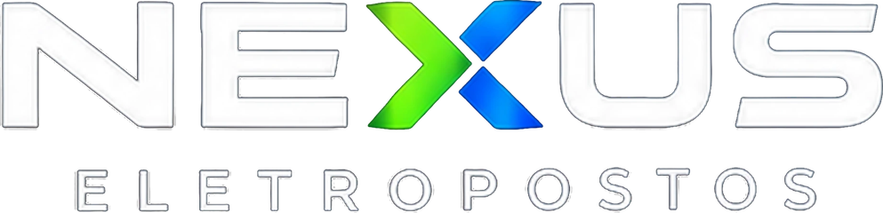
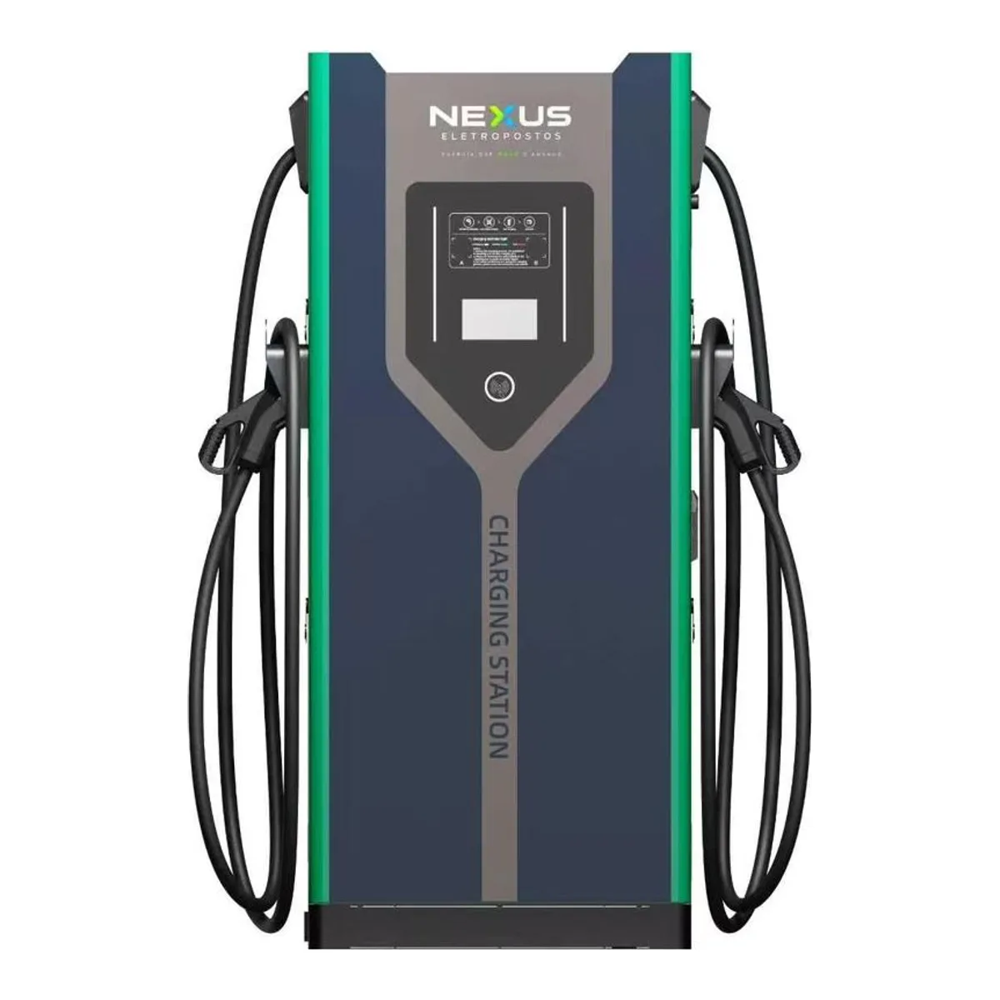

<!doctype html>
<html lang="pt-BR">
<head>
<meta charset="utf-8">
<title>NEXUS Eletropostos — modelo de apresentação</title>
<!--
  MODELO DE APRESENTAÇÃO NEXUS — 14 páginas.

  Por que 14 e não 32: ordem do Thiago (23/09/2026), "mais direta e com confiança
  extraordinária". Cada página aqui ou prova um NÚMERO ou prova a EMPRESA. Página
  que só decora foi cortada.

  A regra do conteúdo: entra o que é bom do ponto do cliente, não entra o que é
  ruim. Omitir é permitido, inventar não é. Sinal fraco (padrão de entrada baixo,
  por exemplo) fica no estudo interno, que é de quem atende, e não neste PDF.

  COMO GERAR:  cd _fonte && node render.js
  Saem três PDFs na pasta de cima: cheio, leve e -celular (1080x1920, em pé).

  Os dados vêm do objeto DADOS lá embaixo. Trocar o cliente é trocar o DADOS.
  Bloco sem dado SE APAGA SOZINHO (ver `apagarVazios`), então nunca sai página
  com "—" nem promessa sem número.
-->
<style>
  @page{size:1920px 1080px;margin:0}
  *{margin:0;padding:0;box-sizing:border-box}
  html,body{background:#05080F}
  body{font-family:"Segoe UI",system-ui,-apple-system,sans-serif;-webkit-font-smoothing:antialiased}

  /* ── a folha ────────────────────────────────────────────────────────────── */
  .slide{position:relative;width:1920px;height:1080px;overflow:hidden;
    --acc:#39FF14; --deep:#0B1A2B; --linha:rgba(255,255,255,.12);
    background:var(--deep);color:#EEF3F8;page-break-after:always}
  .slide:last-child{page-break-after:auto}
  .slide.claro{--linha:rgba(11,26,43,.14);background:#F4F7FA;color:#0B1A2B}
  .wrap{position:relative;height:100%;padding:96px 120px 84px;display:flex;flex-direction:column}

  /* marca no rodapé de toda página */
  .marca{position:absolute;left:120px;right:120px;bottom:38px;display:flex;justify-content:space-between;
    align-items:center;font-size:19px;letter-spacing:.14em;text-transform:uppercase;opacity:.5;font-weight:700}
  .slide.claro .marca{opacity:.55}

  .eyebrow{font-size:22px;letter-spacing:.2em;text-transform:uppercase;font-weight:800;color:var(--acc);margin-bottom:22px}
  h1{font-size:104px;line-height:.98;letter-spacing:-.035em;font-weight:900}
  h2{font-size:74px;line-height:1.02;letter-spacing:-.03em;font-weight:900}
  h3{font-size:40px;line-height:1.1;letter-spacing:-.02em;font-weight:800}
  .sub{font-size:31px;line-height:1.38;opacity:.82;max-width:1180px;margin-top:26px;font-weight:500}
  .mini{font-size:21px;line-height:1.45;opacity:.55;font-weight:600}
  b,strong{font-weight:800}
  .verde{color:var(--acc)}

  /* ── peças ──────────────────────────────────────────────────────────────── */
  .row{display:flex;gap:34px;align-items:stretch}
  .card{flex:1;background:rgba(255,255,255,.055);border:1px solid var(--linha);border-radius:22px;padding:40px 38px}
  .slide.claro .card{background:#fff;border-color:rgba(11,26,43,.1);box-shadow:0 6px 28px rgba(11,26,43,.07)}
  .card .rot{font-size:20px;letter-spacing:.14em;text-transform:uppercase;font-weight:800;opacity:.55;margin-bottom:16px}
  .card .num{font-size:66px;font-weight:900;letter-spacing:-.03em;line-height:1}
  .card .num.sm{font-size:46px}
  .card p{font-size:24px;line-height:1.4;opacity:.8;margin-top:14px;font-weight:500}

  .kpis{display:flex;gap:26px;margin-top:auto}
  .kpi{flex:1;border-top:4px solid var(--acc);padding-top:22px}
  .kpi .v{font-size:72px;font-weight:900;letter-spacing:-.035em;line-height:1}
  .kpi .l{font-size:22px;opacity:.65;margin-top:10px;font-weight:700;line-height:1.3}

  table{width:100%;border-collapse:collapse;font-size:27px}
  th,td{text-align:left;padding:20px 8px;border-bottom:1px solid var(--linha);font-weight:600}
  th{font-size:20px;letter-spacing:.12em;text-transform:uppercase;opacity:.5;font-weight:800}
  td.n{text-align:right;font-weight:800;font-variant-numeric:tabular-nums}

  ul.lista{list-style:none;margin-top:30px}
  ul.lista li{font-size:29px;line-height:1.35;padding:18px 0 18px 46px;border-bottom:1px solid var(--linha);
    position:relative;font-weight:600}
  ul.lista li:before{content:"";position:absolute;left:0;top:28px;width:20px;height:20px;border-radius:50%;
    background:var(--acc)}
  ul.lista li:last-child{border-bottom:0}

  .fonte{font-size:19px;opacity:.45;margin-top:14px;font-weight:600}

  /* a página que prova a empresa usa selos, não adjetivos */
  .selos{display:flex;gap:20px;flex-wrap:wrap;margin-top:34px}
  .selo{border:2px solid var(--acc);border-radius:999px;padding:14px 28px;font-size:23px;font-weight:800;
    letter-spacing:.02em}

  .passos{counter-reset:p;margin-top:36px}
  .passo{position:relative;padding-left:96px;margin-bottom:34px}
  .passo:before{counter-increment:p;content:counter(p);position:absolute;left:0;top:-8px;width:66px;height:66px;
    border-radius:50%;background:var(--acc);color:#0B1A2B;font-size:34px;font-weight:900;
    display:grid;place-items:center}
  .passo h3{margin-bottom:8px}
  .passo p{font-size:25px;line-height:1.4;opacity:.8;font-weight:500}

  .fig{border-radius:22px;overflow:hidden;border:1px solid var(--linha);background:#0A1422}
  .fig img{display:block;width:100%;height:100%;object-fit:contain;background:#F4F7FA}

  .destaque{background:var(--acc);color:#0B1A2B;border-radius:22px;padding:44px 46px;margin-top:auto}
  .destaque .num{font-size:92px;font-weight:900;letter-spacing:-.04em;line-height:1}
  .destaque p{font-size:27px;font-weight:700;margin-top:20px;line-height:1.38}

  /* ── MODO CELULAR — body.movel · 1080x1920 ──────────────────────────────── */
  body.movel .slide{width:1080px;height:1920px}
  body.movel .wrap{padding:140px 72px 120px}
  body.movel .marca{left:72px;right:72px;bottom:52px;font-size:22px}
  body.movel h1{font-size:112px}
  body.movel h2{font-size:88px}
  body.movel h3{font-size:46px}
  body.movel .sub{font-size:38px;max-width:none;margin-top:34px}
  body.movel .mini{font-size:26px}
  body.movel .eyebrow{font-size:26px}
body.movel .slide:first-child img{height:120px}
  body.movel .row{flex-direction:column;gap:26px}
  body.movel .kpis{flex-direction:column;gap:34px}
  body.movel .kpi .v{font-size:92px}
  body.movel .kpi .l{font-size:28px}
  body.movel .card .num{font-size:80px}
  body.movel .card .num.sm{font-size:58px}
  body.movel .card p{font-size:30px}
  body.movel .card .rot{font-size:24px}
  body.movel table{font-size:32px}
  body.movel th{font-size:24px}
  body.movel th,body.movel td{padding:26px 6px}
  body.movel ul.lista li{font-size:36px;padding:24px 0 24px 58px}
  body.movel ul.lista li:before{top:36px;width:26px;height:26px}
  body.movel .selo{font-size:29px;padding:18px 34px}
  body.movel .passo{padding-left:112px;margin-bottom:46px}
  body.movel .passo:before{width:80px;height:80px;font-size:42px}
  body.movel .passo p{font-size:31px}
  body.movel .destaque .num{font-size:112px}
  body.movel .destaque p{font-size:34px;margin-top:26px}
  body.movel .fonte{font-size:24px}
</style>
</head>
<body>
<div id="deck"></div>

<script>
/* ═══════════════════════════════════════════════════════════════════════════
   OS DADOS DO CLIENTE

   É só isto que muda de um cliente para o outro. O que vier vazio ou null APAGA
   a página inteira, em vez de imprimir "—": página com buraco destrói a
   confiança que as outras treze constroem.

   De onde sai cada bloco:
     ponto, mercado ....... do ESTUDO DO LOCAL, que nasce sozinho quando a
                            reunião é marcada (IBGE, SENATRAN, pré-nota)
     estacao, conta ....... do Simulador do /gerador — a fonte da verdade do preço
     estoque .............. preencher só com o que está em Uberlândia DE VERDADE
   ═══════════════════════════════════════════════════════════════════════════ */
const DADOS = {
  cliente:  'Valter Nascimento',
  cidade:   'Salvador, BA',
  endereco: 'Avenida Jequitaia, 102 · Comércio',
  validade: '30 de setembro de 2026',
  consultor:{ nome:'Diego', whats:'(34) 99136-0172' },

  // só o que joga a favor. Sinal fraco fica no estudo interno.
  ponto: {
    tipo:   'Estacionamento',
    vagas:  'mais de 10 vagas',
    fluxo:  'avenida movimentada, no Comércio',
    aFavor: [
      'Você é o proprietário do local. O contrato não depende de terceiro.',
      'Mais de 10 vagas disponíveis: cabe a estação e sobra manobra.',
      'Avenida movimentada, com movimento próprio o dia inteiro.',
      'Entrada trifásica já instalada, com folga no disjuntor.',
    ],
  },

  mercado: {
    populacao:  '2.559.945',
    pib:        'R$ 31.724',
    plugin:     '8.079',
    porMil:     '7',
    porMilBr:   '3,1',
    leitura:    'Salvador tem mais que o dobro de carros plug-in por mil veículos que a média do Brasil, e a frota cresce todo mês.',
    fonte:      'IBGE (população 2026 e PIB per capita 2023) · SENATRAN/RENAVAM (frota, julho de 2026)',
  },

  estacao: {
    potencia: '80 kW',
    saidas:   '2 saídas simultâneas',
    padrao:   'CCS2 e GB/T',
    tempo:    '30 a 40 minutos para 80% de carga',
    ficha: [
      ['Potência', '80 kW em corrente contínua'],
      ['Saídas', '2 simultâneas, CCS2 e GB/T'],
      ['Tela', 'Touch 7 polegadas, em português'],
      ['Conexão', '4G e Wi-Fi, com gestão remota'],
      ['Proteção', 'IP54, uso externo'],
      ['Garantia', '2 anos no equipamento'],
    ],
  },

  // PREENCHER COM O QUE ESTÁ EM UBERLÂNDIA DE VERDADE.
  // Vazio = a página não existe. Foto de fábrica NÃO é estoque no Brasil.
  estoque: null,
  // exemplo do formato:
  // estoque: { unidades: 3, potencia: '80 kW', local: 'Uberlândia, MG',
  //            foto: 'img/estoque.webp' },

  conta: {
    investimento: 'R$ 144.595',
    recargasDia:  10,
    kwhRecarga:   20,
    precoKwh:     'R$ 2,35',
    custoKwh:     'R$ 0,70',
    faturamento:  'R$ 14.460',
    custos:       'R$ 7.527',
    lucro:        'R$ 6.933',
    payback:      '2,3 anos',
    dezAnos:      'R$ 643 mil',
    cenarios: [
      ['Piso',  '7 recargas/dia',  'R$ 4.727', '3,1 anos'],
      ['Base',  '10 recargas/dia', 'R$ 6.933', '2,3 anos'],
      ['Teto',  '13 recargas/dia', 'R$ 9.139', '1,8 anos'],
    ],
    premissas: [
      ['Preço do kWh ao motorista', 'R$ 2,35'],
      ['Custo do kWh na conta', 'R$ 0,70'],
      ['Ativação por recarga', 'R$ 1,20'],
      ['Gateway de pagamento', '14% do faturamento'],
      ['Imposto', '6% do faturamento'],
      ['Manutenção', '0,1% ao mês + R$ 300 fixos'],
      ['Seguro', '1% do investimento ao ano'],
      ['Carga por recarga', '20 kWh'],
      ['Ocupação', 'começa em 50% e chega a 100% em 24 meses'],
    ],
  },

  painel: [
    'Cada recarga que acontece, na hora: quem carregou, quanto e quanto entrou.',
    'O preço do kWh é seu. Você muda quando quiser, do celular.',
    'O caixa do mês fechado, sem planilha.',
    'O carregador avisa antes de dar problema, e a gente age sem você ligar.',
  ],

  empresa: {
    selos: ['Equipe própria', 'ART no CREA', 'Chave na mão', 'Nota fiscal'],
    linhas: [
      'Projeto, equipamento, obra e comissionamento com a mesma equipe. Nada é repassado.',
      'A ART é assinada por engenheiro eletricista do nosso time, não terceirizada.',
      'A gente protocola na distribuidora e acompanha até a energia chegar no ponto.',
      'Mais de 200 reuniões de projeto conduzidas pelos dois sócios desde julho de 2026.',
    ],
  },

  escopo: {
    incluido: [
      'Projeto elétrico e ART',
      'Estação de recarga NEXUS 80 kW',
      'Obra civil da base e do abrigo',
      'Cabeamento, proteções e quadro',
      'Protocolo e acompanhamento na distribuidora',
      'Comissionamento e primeira recarga assistida',
      'Painel de gestão configurado no seu nome',
      'Treinamento da sua equipe',
    ],
    garantias: [
      ['Equipamento', '2 anos'],
      ['Instalação e obra', '1 ano'],
      ['Suporte remoto', 'enquanto o ponto operar'],
      ['Prazo de entrega', '25 dias após a liberação do crédito'],
    ],
  },

  fechamento: {
    total: 'R$ 144.595',
    formas: ['À vista', 'Financiamento com carência', 'Cartão em até 12x'],
  },
};

/* ═══════════════════════════════════════════════════════════════════════════
   O DECK
   ═══════════════════════════════════════════════════════════════════════════ */
const D = DADOS;
const e = (s) => String(s == null ? '' : s);

/** Toda página passa por aqui. Devolver null apaga a página. */
const P = [];
const pag = (html) => { if (html) P.push(html); };

const marca = (dir = 'NEXUS Eletropostos') =>
  `<div class="marca"><span>${dir}</span><span>${e(D.cidade)}</span></div>`;

/* 1 · CAPA — quem é o cliente, onde é o ponto, e o que este documento é */
pag(`<section class="slide"><div class="wrap">
  
  <h1>${e(D.cliente)}</h1>
  <div class="sub">${e(D.endereco)} · ${e(D.cidade)}</div>
  <div style="margin-top:auto">
    <h3 style="opacity:.9">O estudo do seu ponto e a proposta, no mesmo documento.</h3>
    <div class="mini" style="margin-top:18px">Valores válidos até ${e(D.validade)}.</div>
  </div>
  ${marca()}
</div></section>`);

/* 2 · A PÁGINA DA CONFIANÇA — a gente estudou o endereço ANTES de sentar com ele.
      É a página mais forte do deck e por isso ela é a segunda, não a décima. */
pag(`<section class="slide"><div class="wrap">
  <div class="eyebrow">Antes desta conversa</div>
  <h2>A gente já tinha estudado<br>o seu endereço.</h2>
  <div class="sub">Quando você marcou, o nosso sistema levantou sozinho o seu ponto e a sua cidade:
    frota elétrica, movimento em volta, quem já carrega por perto e quanto o local aguenta.
    Nada do que você vai ver aqui foi feito no improviso.</div>
  <div class="row" style="margin-top:auto">
    <div class="card"><div class="rot">O que olhamos</div><div class="num sm">4 fontes</div>
      <p>IBGE, SENATRAN, mapa do entorno e a rede de recarga já instalada.</p></div>
    <div class="card"><div class="rot">Quando</div><div class="num sm">Antes</div>
      <p>O estudo fica pronto minutos depois de você marcar, não depois da reunião.</p></div>
    <div class="card"><div class="rot">Para quê</div><div class="num sm">Decidir</div>
      <p>Para esta conversa começar no número, e não em suposição.</p></div>
  </div>
  ${marca()}
</div></section>`);

/* 3 · O PONTO — só o que joga a favor */
pag(D.ponto && D.ponto.aFavor && D.ponto.aFavor.length ? `<section class="slide"><div class="wrap">
  <div class="eyebrow">O seu ponto</div>
  <h2>Por que este endereço<br>funciona.</h2>
  <ul class="lista">${D.ponto.aFavor.map(l => `<li>${e(l)}</li>`).join('')}</ul>
  ${marca()}
</div></section>` : null);

/* 4 · O MERCADO DA CIDADE DELE — com fonte impressa, que é o que compra crédito */
pag(D.mercado ? `<section class="slide claro"><div class="wrap">
  <div class="eyebrow">O mercado em ${e(D.cidade)}</div>
  <h2>A frota elétrica da sua cidade<br>já está na rua.</h2>
  <div class="row" style="margin-top:44px">
    <div class="card"><div class="rot">Habitantes</div><div class="num">${e(D.mercado.populacao)}</div></div>
    <div class="card"><div class="rot">PIB por pessoa</div><div class="num">${e(D.mercado.pib)}</div></div>
    <div class="card"><div class="rot">Carros plug-in</div><div class="num">${e(D.mercado.plugin)}</div></div>
  </div>
  <div class="destaque" style="margin-top:38px">
    <div class="num">${e(D.mercado.porMil)} por mil</div>
    <p>veículos plug-in em ${e(D.cidade)}, contra ${e(D.mercado.porMilBr)} por mil no Brasil.
       ${e(D.mercado.leitura)}</p>
  </div>
  <div class="fonte">Fonte: ${e(D.mercado.fonte)}</div>
  ${marca()}
</div></section>` : null);

/* 5 · A ESTAÇÃO */
pag(D.estacao ? `<section class="slide claro"><div class="wrap">
  <div class="eyebrow">O equipamento</div>
  <h2>A estação NEXUS ${e(D.estacao.potencia)}.</h2>
  <div class="row" style="margin-top:40px;flex:1;align-items:center">
    <div class="fig" style="flex:1.1;height:100%"></div>
    <div style="flex:1">
      <table>${D.estacao.ficha.map(([a, b]) => `<tr><td>${e(a)}</td><td class="n">${e(b)}</td></tr>`).join('')}</table>
    </div>
  </div>
  ${marca()}
</div></section>` : null);

/* 6 · ESTÁ AQUI — a página que troca promessa por fato.
      Sem dado de estoque REAL, a página não existe. */
pag(D.estoque && D.estoque.unidades ? `<section class="slide"><div class="wrap">
  <div class="eyebrow">Disponibilidade</div>
  <h2>O equipamento<br>já está no Brasil.</h2>
  <div class="destaque" style="margin-top:44px">
    <div class="num">${e(D.estoque.unidades)} ${Number(D.estoque.unidades) === 1 ? 'unidade' : 'unidades'}</div>
    <p>de ${e(D.estoque.potencia)} em ${e(D.estoque.local)}, prontas para sair.</p>
  </div>
  <div class="sub">Você não está comprando uma importação para daqui a seis meses.
    Está comprando um equipamento que já passou pela alfândega e está em solo brasileiro.</div>
  ${marca()}
</div></section>` : null);

/* 7 · DE ONDE VEM CADA REAL */
pag(D.conta ? `<section class="slide"><div class="wrap">
  <div class="eyebrow">A conta</div>
  <h2>De onde vem cada real.</h2>
  <div class="row" style="margin-top:44px">
    <div class="card"><div class="rot">Cada recarga</div><div class="num sm">${e(D.conta.kwhRecarga)} kWh</div>
      <p>a ${e(D.conta.precoKwh)} o kWh cobrado do motorista.</p></div>
    <div class="card"><div class="rot">Por dia</div><div class="num sm">${e(D.conta.recargasDia)} recargas</div>
      <p>é a premissa de base, não o melhor caso.</p></div>
    <div class="card"><div class="rot">Custo da energia</div><div class="num sm">${e(D.conta.custoKwh)}</div>
      <p>por kWh na sua conta de luz.</p></div>
  </div>
  <div class="kpis" style="margin-top:56px">
    <div class="kpi"><div class="v">${e(D.conta.faturamento)}</div><div class="l">entra por mês</div></div>
    <div class="kpi"><div class="v">${e(D.conta.custos)}</div><div class="l">sai por mês</div></div>
    <div class="kpi"><div class="v verde">${e(D.conta.lucro)}</div><div class="l">sobra por mês</div></div>
  </div>
  ${marca()}
</div></section>` : null);

/* 8 · O RETORNO */
pag(D.conta ? `<section class="slide"><div class="wrap">
  <div class="eyebrow">O retorno</div>
  <h2>O que o ponto devolve.</h2>
  <div class="kpis" style="margin-top:60px;margin-bottom:auto">
    <div class="kpi"><div class="v">${e(D.conta.investimento)}</div><div class="l">investimento</div></div>
    <div class="kpi"><div class="v verde">${e(D.conta.payback)}</div><div class="l">para se pagar</div></div>
    <div class="kpi"><div class="v">${e(D.conta.dezAnos)}</div><div class="l">em caixa, em 10 anos</div></div>
  </div>
  <div class="mini">Projeção com as premissas da página 10. Não é promessa de retorno.</div>
  ${marca()}
</div></section>` : null);

/* 9 · PISO, BASE E TETO — o piso vem primeiro de propósito */
pag(D.conta && D.conta.cenarios ? `<section class="slide claro"><div class="wrap">
  <div class="eyebrow">Os três cenários</div>
  <h2>Começando pelo pior.</h2>
  <table style="margin-top:44px">
    <tr><th>Cenário</th><th>Movimento</th><th class="n" style="text-align:right">Sobra por mês</th><th class="n" style="text-align:right">Paga em</th></tr>
    ${D.conta.cenarios.map(([a, b, c, d]) =>
      `<tr><td><b>${e(a)}</b></td><td>${e(b)}</td><td class="n">${e(c)}</td><td class="n">${e(d)}</td></tr>`).join('')}
  </table>
  <div class="sub">Mesmo no piso, com sete recargas por dia, o ponto se paga em pouco mais de três anos
    e continua rendendo depois disso.</div>
  ${marca()}
</div></section>` : null);

/* 10 · AS PREMISSAS ABERTAS — a página que compra credibilidade */
pag(D.conta && D.conta.premissas ? `<section class="slide claro"><div class="wrap">
  <div class="eyebrow">Transparência</div>
  <h2>Toda a conta, aberta.</h2>
  <div class="sub" style="margin-bottom:20px">Se você mudar qualquer número desta lista, a conta muda.
    Está tudo aqui para você conferir, inclusive o que pesa contra.</div>
  <table>${D.conta.premissas.map(([a, b]) =>
    `<tr><td>${e(a)}</td><td class="n">${e(b)}</td></tr>`).join('')}</table>
  ${marca()}
</div></section>` : null);

/* 11 · O PAINEL — o que ele vai olhar todo dia */
pag(D.painel && D.painel.length ? `<section class="slide"><div class="wrap">
  <div class="eyebrow">O painel</div>
  <h2>Você não compra um poste.<br>Compra uma operação.</h2>
  <ul class="lista">${D.painel.map(l => `<li>${e(l)}</li>`).join('')}</ul>
  ${marca()}
</div></section>` : null);

/* 12 · QUEM EXECUTA */
pag(D.empresa ? `<section class="slide"><div class="wrap">
  <div class="eyebrow">Quem faz</div>
  <h2>Quem assina a obra<br>é quem responde por ela.</h2>
  <div class="selos">${D.empresa.selos.map(s => `<span class="selo">${e(s)}</span>`).join('')}</div>
  <ul class="lista">${D.empresa.linhas.map(l => `<li>${e(l)}</li>`).join('')}</ul>
  ${marca()}
</div></section>` : null);

/* 13 · INCLUÍDO E GARANTIAS */
pag(D.escopo ? `<section class="slide claro"><div class="wrap">
  <div class="eyebrow">O que está incluído</div>
  <h2>Chave na mão, escrito.</h2>
  <div class="row" style="margin-top:40px;flex:1">
    <div style="flex:1.2">
      <ul class="lista" style="margin-top:0">${D.escopo.incluido.map(l => `<li>${e(l)}</li>`).join('')}</ul>
    </div>
    <div style="flex:.8">
      <div class="card" style="height:100%">
        <div class="rot">Garantias</div>
        <table style="margin-top:8px">${D.escopo.garantias.map(([a, b]) =>
          `<tr><td>${e(a)}</td><td class="n">${e(b)}</td></tr>`).join('')}</table>
      </div>
    </div>
  </div>
  ${marca()}
</div></section>` : null);

/* 14 · O INVESTIMENTO E A ASSINATURA
      Última página fica parada na tela. Ela carrega os números fortes e a palavra
      assinatura. NÃO existe "próximo passo" aqui: nada entre o deck e a decisão. */
pag(D.fechamento ? `<section class="slide"><div class="wrap">
  <div class="eyebrow">O investimento</div>
  <h2>${e(D.fechamento.total)}</h2>
  <div class="sub">${D.fechamento.formas.map(e).join(' · ')}. Valores válidos até ${e(D.validade)}.</div>
  <div class="kpis" style="margin-top:58px">
    <div class="kpi"><div class="v verde">${e(D.conta.lucro)}</div><div class="l">por mês</div></div>
    <div class="kpi"><div class="v">${e(D.conta.payback)}</div><div class="l">para se pagar</div></div>
    <div class="kpi"><div class="v">25 dias</div><div class="l">para entregar, depois da assinatura</div></div>
  </div>
  <div class="destaque" style="margin-top:46px">
    <div class="num" style="font-size:56px">A assinatura é a etapa 1.</div>
    <p>Tudo que precisa ser medido, coletado e protocolado vem depois dela, e é nossa responsabilidade.
       Falar com ${e(D.consultor.nome)}: ${e(D.consultor.whats)}</p>
  </div>
  ${marca()}
</div></section>` : null);

document.getElementById('deck').innerHTML = P.join('\n');
</script>
</body>
</html>
